Отчет по лабораторной работе №1
Тема: Работа с сокетами
Выполнил: Криличевский Максим, K3339
Практическое задание 1. Обмен сообщениями по UDP
Цель: организовать обмен сообщениями между клиентом и сервером с помощью библиотеки socket и протокола UDP.
Реализация: сервер ожидает данные на 127.0.0.1:5000. Клиент отправляет Hello, server, сервер отвечает Hello, client!. Для передачи и получения датаграмм используются sendto() и recvfrom().
Результат: двусторонний обмен выполнен успешно.
Запуск сервера:
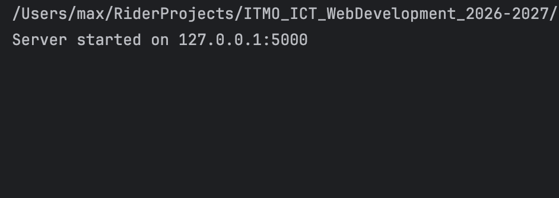
Запуск клиента:
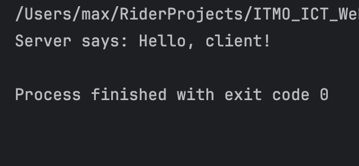
Ответ сервера:
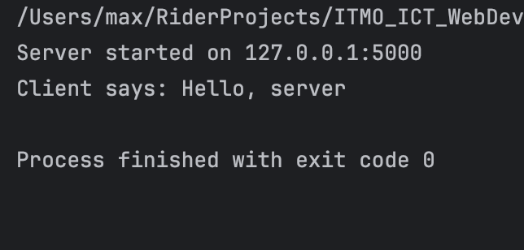
Практическое задание 2. Вычисление площади параллелограмма по TCP
Цель: передать серверу основание и высоту параллелограмма и получить вычисленную площадь.
Реализация: клиент подключается к 127.0.0.1:5001 по TCP и отправляет введённые числа. Сервер вычисляет S = a * h и возвращает результат. После одного обмена программы закрывают соединение.
Результат: при основании 10 и высоте 20 клиент получил площадь 200. Сервер и клиент завершились без ошибок.
Консоль сервера:
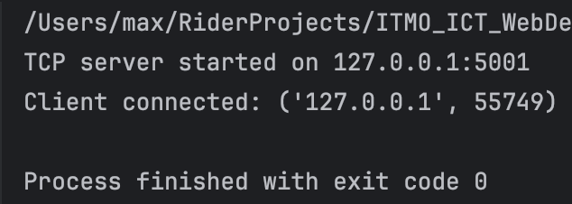
Консоль клиента:
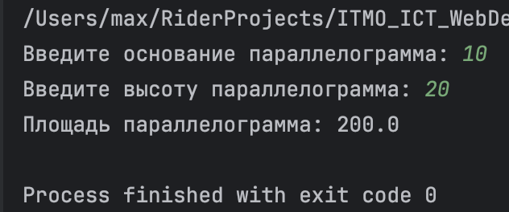
Практическое задание 3. HTTP-сервер для передачи HTML-страницы
Цель: отправить браузеру HTML-страницу из файла index.html с помощью библиотеки socket.
Реализация: TCP-сервер работает на 127.0.0.1:5003. Он читает HTML-файл и отправляет HTTP-ответ со статусом 200 OK, заголовками Content-Type, Content-Length, Connection и содержимым страницы. Таймаут в две секунды позволяет закрывать подключения, которые не отправляют запрос.
Результат: браузер отобразил страницу «HTTP-сервер работает!». Проверка подтвердила совпадение тела ответа с файлом index.html.
Запуск сервера:
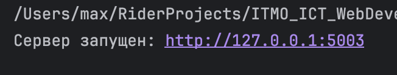
Страница в браузере:
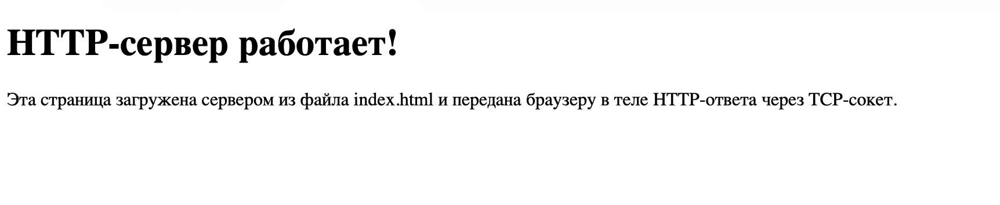
Практическое задание 4. Многопользовательский чат по TCP
Цель: реализовать чат для нескольких участников с использованием socket и threading.
Реализация: сервер на 127.0.0.1:5004 хранит список подключённых клиентов и обрабатывает каждого в отдельном потоке. Клиент отправляет сообщения, сервер пересылает их остальным участникам. На клиенте ввод и получение сообщений выполняются в разных потоках. Lock защищает список клиентов и рассылку, а символ \n отделяет сообщения друг от друга. Команда /exit закрывает соединение. Потоки запускаются через Thread.start().
Результат: проверен обмен сообщениями между тремя клиентами, включая русский текст и длинные сообщения. После обычного выхода и внезапного отключения участника чат продолжает работать. При остановке сервера клиент сообщает о потере связи.
Примеры работы
Первый клиент
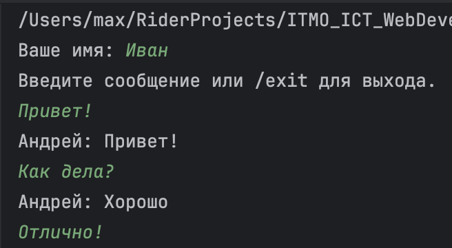
Второй клиент
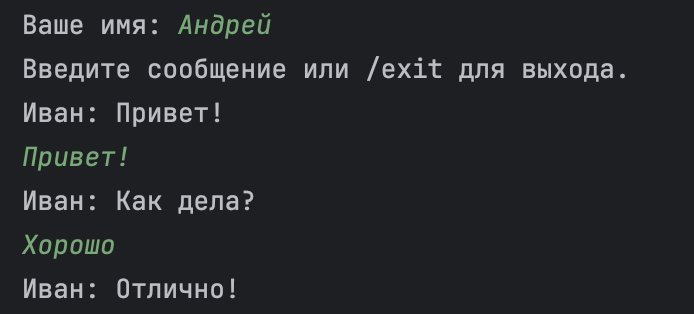
На сервере
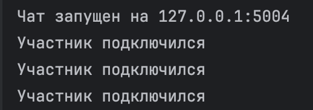
Практическое задание 5. Обработка GET- и POST-запросов
Цель: реализовать веб-сервер на библиотеке socket, который принимает дисциплину и оценку и показывает добавленные записи.
Реализация: сервер на 127.0.0.1:5005 оформлен классом MyHTTPServer. Методы отдельно отвечают за приём соединения, разбор запроса и заголовков, обработку и отправку ответа. GET возвращает HTML-страницу с формой и таблицей оценок. POST получает название дисциплины и оценку от 2 до 5, проверяет поля и добавляет оценку в список выбранной дисциплины. Каждая дисциплина отображается одной строкой, а её оценки — через запятую. После сохранения сервер перенаправляет браузер на GET, чтобы обновление страницы не дублировало запись. Данные хранятся в памяти до остановки сервера.
Результат: повторные POST-запросы для «МатАн» с оценками 5, 4 и 5 сформировали одну строку «МатАн — 5, 4, 5». Другая дисциплина отображается отдельно. Повторный GET не добавляет оценок. Пустая дисциплина и оценка вне диапазона отклоняются с ответом 400 Bad Request.
Пример работы
Старт сервера
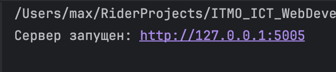
Интерфейс веб-сервера
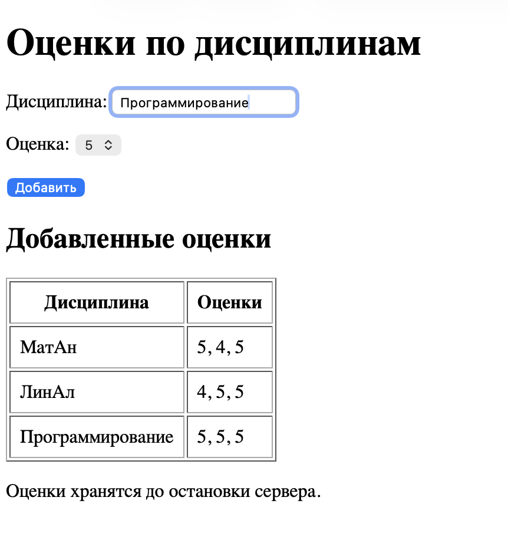
Вывод
В ходе лабораторной работы были изучены основные принципы сетевого взаимодействия с использованием сокетов: передача датаграмм по UDP, установление TCP-соединения, многопоточная обработка клиентов и структура HTTP-запросов и ответов. Были реализованы UDP- и TCP-клиент-серверные приложения, HTTP-сервер, многопользовательский чат и обработка GET- и POST-запросов.